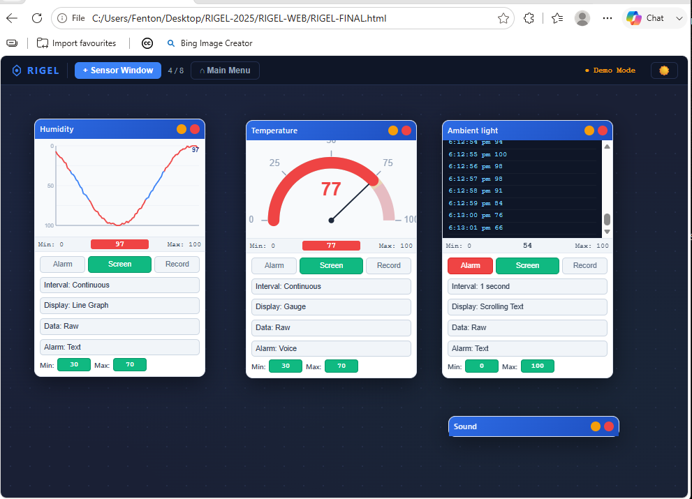
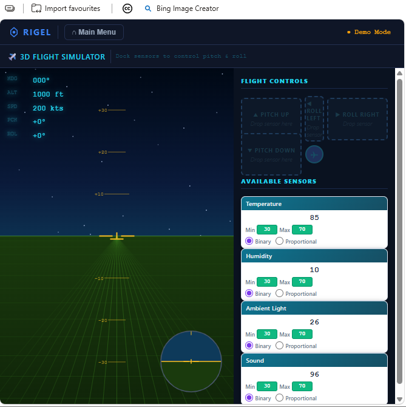

RIGEL-WEB: the browser port of RIGEL
A free, self-contained, single-file HTML application of roughly 5,100 lines that recreates the original Windows RIGEL in a web browser. It connects low-cost do-it-yourself sensors, wearable biomedical sensors, and microcontrollers to real-time data logging, life-function monitoring, and game control. It is cross-platform and installation-free, with no server, no framework, and no network dependency.
What it does
RIGEL-WEB connects a computer to microcontroller-based sensor units, including the Picaxe 08M2 and 14M2, Arduino, ESP8266, ESP32, and the BBC Micro:bit, over USB-serial, Bluetooth, or WiFi. It logs and graphs sensor data live in the browser, all from a single local HTML file that runs offline once opened.
Data a learner gathers directly from a real sensor has a transparent provenance. As AI-generated datasets, drawn from models trained on an increasingly polluted literature, become harder to trust, first-hand measurement of this kind matters more, not less. And because RIGEL-WEB is free and works with sensors costing a few dollars, the old cost-and-access defence of simulation no longer applies: with the equipment barrier removed, simulation must be justified on other grounds.
STEM modules
- Science Lab: multi-sensor display with data logging.
- Home Security: floor plan with sensor pins and alarm management.
- CPR Simulator: rate, depth, and blood-oxygen monitoring.
- 2D Sensor Game: two-axis bipolar sensor control.
- 3D Flight Simulator: pitch and roll sensor control.
- Robot Remote Control: bidirectional sensor and actuator interface.
- Industrial Measurement and Control: process gauges and control.


How it relates to RIGEL and SMART
RIGEL began as a Windows application built by repurposing game design software into a universal science instrument. RIGEL-WEB carries that whole idea into a single browser file. Its sister application, SMART, uses the browser audio subsystem for fast acoustic timing, while RIGEL-WEB focuses on many-channel sensor work through a microcontroller. Together they form a zero-cost, cross-platform laboratory instrument suite that uses hardware schools already own.
Browser compatibility
The USB-serial connection uses the Web Serial API, currently supported in Chromium-based browsers such as Chrome and Edge. For the widest device reach, including Chromebooks and Safari-only iPad deployments, the sister tool SMART uses the broadly supported audio path instead.
Part of a longer line of work
RIGEL-WEB continues a consistent method across three decades: identify a structural property of an existing tool, use it for a purpose its designers did not intend, and document the result. It is a continuation of the question that founded the Nexus Research Group in 1997: how do you do authentic science with nothing? The approach is described further on the Design by Subversion page.
Archived on Zenodo with a permanent DOI: https://doi.org/10.5281/zenodo.20541487